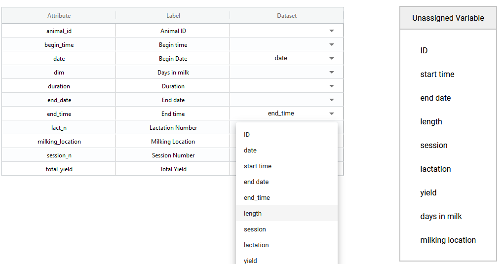

Pour vérifier vos données selon les règles du schéma, vous devez vous assurer de faire correspondre les attributs des deux. Sinon, le vérificateur ne saura pas quelles règles appliquer à votre ensemble de données.
Votre ensemble de données peut contenir plus d'attributs que votre schéma n'en contient. La vérification ignorera ces colonnes et vous pourrez vérifier les données qui correspondent au schéma.
Les attributs de votre ensemble de données peuvent être nommés différemment par rapport au schéma. Vous pouvez également avoir plus ou moins d'attributs que le schéma dans votre ensemble de données. Le vérificateur de données tente de faire correspondre les attributs du schéma avec ceux de votre ensemble de données. Si des correspondances sont incorrectes ou incomplètes, vous pouvez les corriger ici.
Dans cette figure, vous pouvez voir que certains attributs (par exemple, date et end_time) ont été correctement appariés entre l'ensemble de données et le schéma. Les variables non assignées sont les colonnes de données de votre ensemble de données qui ne correspondent pas encore à un attribut du schéma. Dans la colonne Dataset, vous pouvez sélectionner ces variables non assignées dans le menu déroulant et faire correspondre les attributs entre votre ensemble de données et le schéma.
